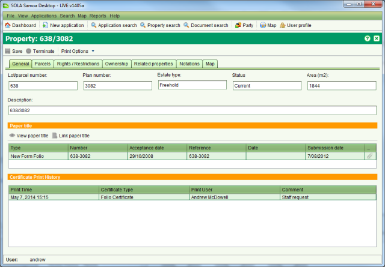

The Property Details screen allows you to view or edit property details. You can access the
Property Details screen in view only mode by opening a search result from the Property Search
screen. To edit property details, you must first lodge an application that contains a
Registration Service such as Transfer or Record Mortgage, assign the application and then Start the service
from the Application Details Service tab. The Land Registration How To section discusses how
to process various Registration Services using the Property Details screen.
Start the service
from the Application Details Service tab. The Land Registration How To section discusses how
to process various Registration Services using the Property Details screen.

Property Details
A property links the rights and restrictions over a parcel to the individuals or groups (i.e. parties) that hold those rights. The information represented by the property is often referred to as the Title. For SOLA Samoa, a property is the equivalent of a Computer Folio. Details that can be captured for a property include
|
General |
General information about the property like the two part folio reference (Lot/parcel number and Plan number), estate type, status, area and description as well as documents relevant to the property. |
|
Parcels |
The area(s) of land that define the extent of a property. Parcels can be spatially defined and/or textually described. |
|
Rights, Restrictions & Responsibilities |
The rights, restrictions or responsibilities the right holder(s) are accorded in relation to the parcels represented by the property. These could be ownership rights, lease rights, mortgage rights, mining rights, access rights, servitude's, building restrictions, land use restrictions, caveats, etc. This tab shows summary information of the current rights and restrictions for the property along with any pending (i.e. unregistered) rights or restrictions. |
|
Ownership |
Typically the primary right for a property is the right of ownership (e.g. Freehold, Leasehold, Government or Customary). Properties can have one or many owners each with a share in the property that may be explicitly defined (tenants in common) or undivided (joint tenants). The Ownership tab is intended to provide quick access to current as well as pending (i.e. unregistered) ownership details. Note that any changes in ownership must captured on the primary right in the Rights / Restrictions tab using the appropriate Registration Service. |
|
Memorials |
Short comments recorded when changes are made to the property that provides a succinct history of the changes. |
|
Property history |
Shows the list of parent properties (if any) that are superseded by the property (i.e. Prior Title) along with the list of child properties (if any) that the property has been superseded by. The village this property belongs to is also noted on this tab. |
|
Map |
Provides the SOLA Map Viewer highlighting the parcel for the property if one exists. This can help to identify the location of the property. |